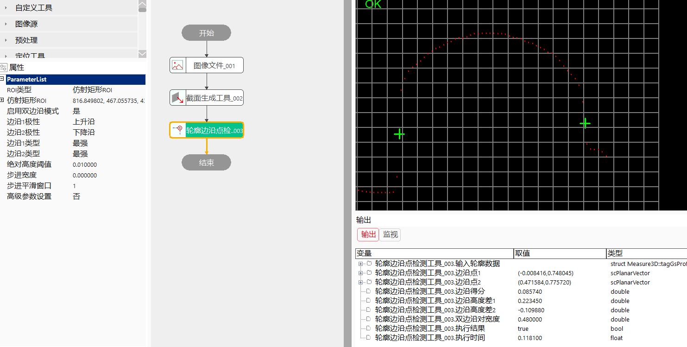
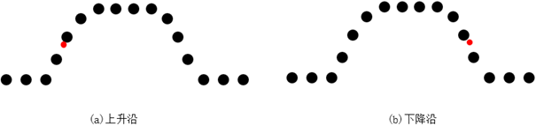
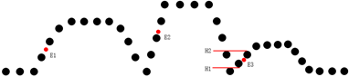
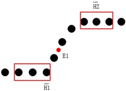

轮廓边沿点检测工具计算轮廓数据上的边沿点的工具。
轮廓边沿点检测工具主要是获取深度图像中感兴趣区域内所截取轮廓数据的边沿特征点坐标信息。根据从深度图像中截取的轮廓数据获取边沿特征点的二维坐标信息，轮廓边沿点检测工具输出边沿点坐标可以作为拟合测量或其它工具的输入参数。
step1：添加图像文件、截面生成工具、轮廓边沿点检测工具，并进行参数的链接，如图3-1所示；

step2：参数设置：
边沿极性：即上升沿、下降沿或任意沿。

上升沿：轮廓数据中下一个轮廓点与当前轮廓点的高度差大于零，此时两者的中心点即为上升沿，如图3-2.(a)中红色点所示。 下降沿：轮廓数据中下一个轮廓点与当前轮廓点的高度差小于零，此时两者的中心点即为下降沿，如图3-2.(b)中红色点所示。 任意沿：上升沿或下降沿，当同时存在上升沿或下降沿时，输出两者中高度差绝对值较大的边沿。 边沿类型：提供最强、第一个、最后一个和期望高度五种类型，如图3-3所示，以上升沿为例，具体含义如下：

最强：两侧的高度差最大的边沿点，高度差需高于高度阈值，边沿两侧高度差越大，其边沿点得分越高。在图3-3中，E2 为最强边沿点。 第一个：在轮廓数据中，从左到右最早出现且满足高度阈值的边沿，边沿位置越靠前，其得分越高。在图3-3中，E1位置最靠前，为第一个边沿。 最后一个：在轮廓数据中，从左到右最后出现且满足高度阈值的边沿，边沿位置越靠后，其得分越高。在图3-3中，E3位置最靠后，为最后一个边沿。
步进宽度：待检测边沿的宽度，即当前轮廓点与下一个轮廓点X坐标的差值，步进宽度作为遍历的步长，过大的步进宽度会降低检测的精度。图3-4为窗口大小为3时的示意，当要检测上升沿时，步进宽度设置不应该大于两个窗口的水平距离。
平滑窗口：当平滑窗口大小大于1时，先计算窗口内所有轮廓数据的高度均值，再使用均值计算边沿高度差，此时的高度差与高度阈值比对确定是否为边沿点，平滑窗口起到对轮廓数据点平滑过滤的作用。图3-4为窗口大小为3时的示意，两个窗口内的高度均值分别为H1和H2，此时上升沿E1的高度差为H2-H1。

最大间隙宽度：在因遮挡等原因导致轮廓数据缺失区域中，用于设置填充无效点的最大距离，能够保证数据的连续性。当轮廓无效值的间隙宽度小于最大间隙宽度时则使用无效值两端较小值进行填充，否则不进行填充或使用自定义填充值填充（需启用无效值填充），当最大间隙宽度和无效值填充同时生效时，优先使用最大间隙宽度进行填充。
得分约束：设定得分阈值，过滤结果中得分小于设定阈值的边沿。
无
| 参数名称 | 参数说明 |
|---|---|
| 输入轮廓数据 | 输入待检测的轮廓数据，该参数来源于截面生成工具 |
| 二维线性变换 | 目标相对于模板的平移、旋转、缩放变换 |
| 参数名称 | 参数说明 |
|---|---|
| ROI类型 | 分为3种，整幅图像、矩形ROI和仿射矩形ROI |
| 启用双边沿模式 | 开启时查找一对边沿点，不开启时查找单个边沿点 |
| 边沿1/2极性 | 包括三种模式：上升沿、下降沿、任意 |
| 边沿1/2类型 | 包括三种模式：最强、第一个、最后一个 |
| 绝对高度阈值 | 取值范围：[0,100000000], 单位：mm。 |
| 步进宽度 | 待检测边沿的宽度，即当前轮廓点与下一个轮廓点X坐标的差值, 取值范围：[0,100000000] |
| 步进平滑窗口 | 当平滑窗口大小大于1时，先计算窗口内所有轮廓数据的高度均值，再使用均值计算边沿高度差, 取值范围：[1,100] |
| 高级参数设置 | 显示可以调节的高级参数 |
| 启用相对高度阈值 | 选“是”，开启相对高度阈值设置 |
| 相对高度阈值 | 将绝对高度归一化到[0,1]，取值范围：[0,1] |
| 最大间隙宽度 | 用于设置填充无效点的最大距离，能够保证数据的连续性, 取值范围：[0,100000000], 单位：mm |
| 启用无效值填充 | 选“是”，开启无效填充值设置 |
| 无效填充值 | 取值范围：[-100000000,100000000], 单位：mm |
| 启用宽度评价 | 双边沿模式生效，选“是”，开启宽度评价，设置期望宽度，最后过滤出最接近期望宽度的一组边沿点 |
| 双边沿期望宽度 | 取值范围：[0,100000000], 单位：mm |
| 启用得分约束 | 对结果进行过滤，选“是”，开启得分约束类型和约束阈值设置 |
| 得分约束类型 | 包括两种：绝对得分约束和相对得分约束 |
| 边沿得分约束阈值 | 取值范围：[0,1] |
| 参数名称 | 参数说明 |
|---|---|
| 边沿点1、边沿点2、边沿得分、边沿高度差1、边沿高度差2、双边沿对宽度 | 计算结果 |
| 参数名称 | 参数说明 |
|---|---|
| 输入轮廓数据 | 输入的轮廓数据，包括轮廓点数，有效点数 |
| 计算结果 | 主要包括：边沿点1、边沿点2、边沿得分、边沿高度差1、边沿高度差2、双边沿对宽度 |
| 执行时间 | 工具执行时间 |
| 执行结果 | 工具执行结果 |
参见“\Samples\3D\深度图\3D测量工具.gvp”。
无